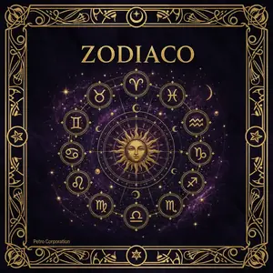

🔇
☀️
IT
EN
ES
✦

⭐
'">
Profilo Mistico
La tua mappa astrale
Archivio
Le tue letture
Oroscopo
Il tuo destino astrale
Compatibilità
Affinità di coppia
Luna
Fasi & calendario
Pianeti
Transiti & ore
Astrologia Avanzata
Tema natale · Ascendente · Case
Vedica
Jyotish · Nakshatra
Oroscopo Cinese
Anno & segno lunare
BaZi
Pilastri del destino
Zi Wei Dou Shu
Stella imperiale
Human Design
Il tuo tipo energetico
Gene Keys
Richard Rudd
Calendario Lunare
Fasi & rituali
Calendario Maya
Tzolkin
Ore Planetarie
Giorni & momenti
Stagioni Magiche
Sabbat & esbat
Tarocchi
78 carte complete
Rune
Elder Futhark
I Ching
64 esagrammi
Libro Risposte
100 risposte
Geomanzia
16 figure della terra
Bibliomanzia
Libri & fondi di tè
Oracolo di Delfi
Apollo & Pizia
Sogni
Oniromanzia
Cartomanzia
Carte da gioco
Lenormand
36 carte
Oracolo Angeli
Messaggi celesti
Oracolo Celti
Tradizione nordica
Specchio Nero
Catottromanza
Cromomanzia
Divinazione dei colori
Numerologia
Numero del destino
Ore Specchio
Numeri doppi
Animale Totem
Il tuo spirito guida
Angeli
Numeri angelici
Compatibilità
Affinità astrale
Magia Bianca
Protezione & luce
Magia Rossa
Passione & desiderio
Magia Nera
Rituali dell'ombra
Malocchio
Rimedi & protezioni
Sigilli di Salomone
Magia cerimoniale
60 Magie
Tradizione esoterica
Stregoneria & Wicca
Sabbat & incantesimi
Alchimia
Trasmutazione
Cabala
Albero della vita
Ermetismo
Principi ermetici
Negromanzia
Spiriti & anime
Bibliomanzia
Figure dell'ombra
Sciamanesimo
Spiriti guida & trance
Buddismo Esoterico
Tantra & mandala
Sufismo
Mistica islamica
Druidismo
Tradizione celtica
Voodoo & Hoodoo
Tradizione afrocaraibica
Rosacroce
Ordine esoterico
Proiezione Astrale
Viaggio fuori corpo
Energia
Chakra & cristalli
Pietre Magiche
Cristalli & usi
Strumenti
Pendolo & grimorio
Meditazione
Percorsi guidati
Pranayama
Breathwork guidato
Ipnosi
Vite passate
EFT Tapping
Libera i blocchi
Enciclopedia Esoterica
Glossario completo · articoli · tradizioni del mondo
Community & Commenti
Condividi le tue esperienze mistiche
✦ Domande Frequenti
✦ Condividi MYSTICA
📤 Condividi
💬 WhatsApp
✈️ Telegram
f Facebook
𝕏 Twitter
🔍 Scopri le Altre Categorie
🔑 Ho già pagato — Inserisci codice
✦ Sblocca con il Codice
✦ Premium attivato! Ricarico…
Non hai il codice?
Recupera accesso con email e data di nascita →